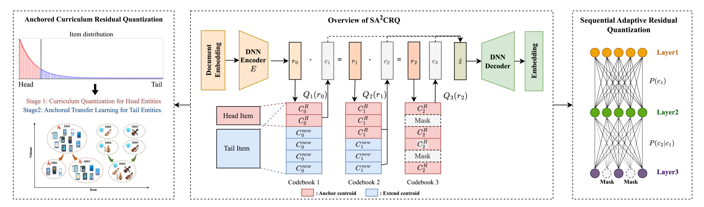
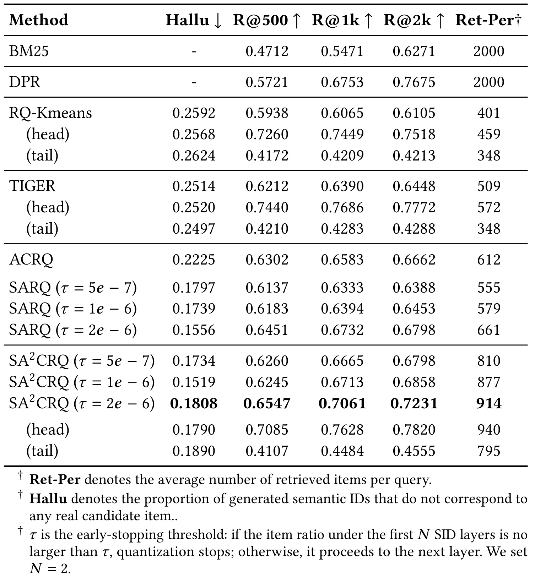
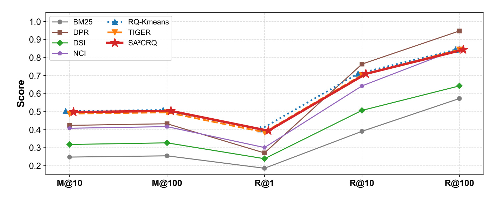
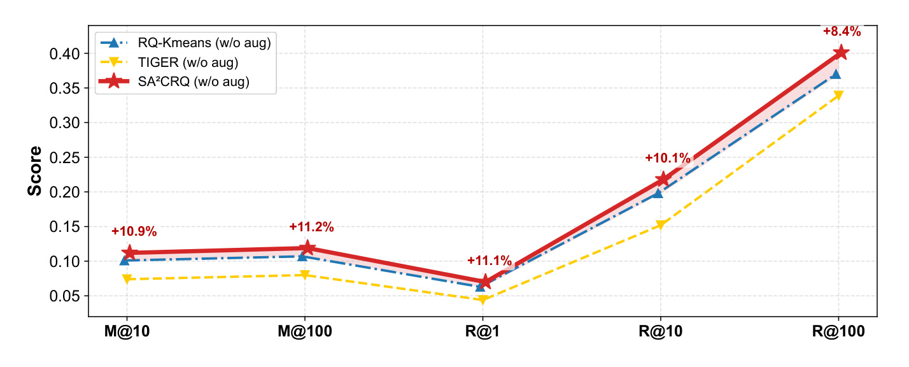
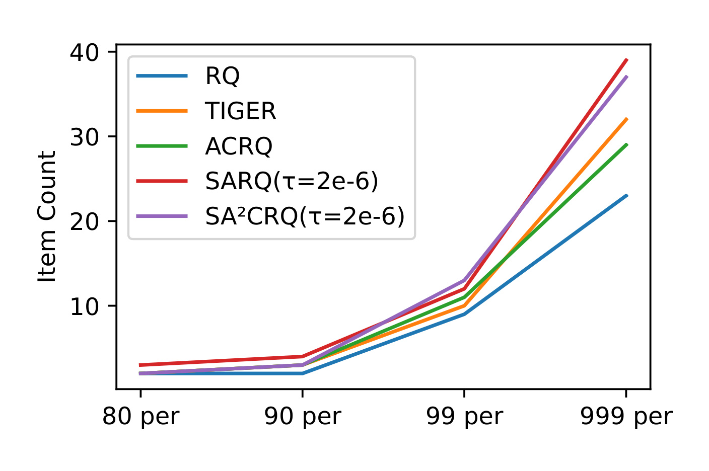
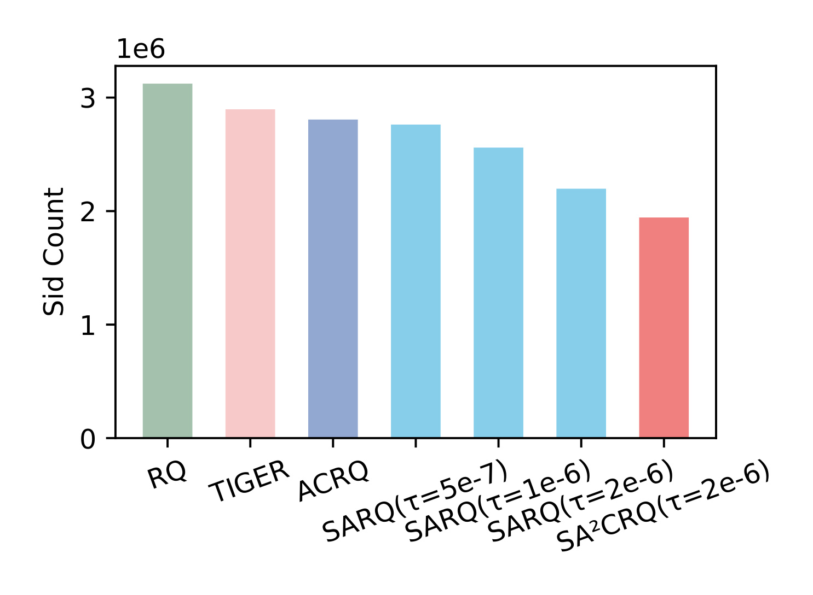
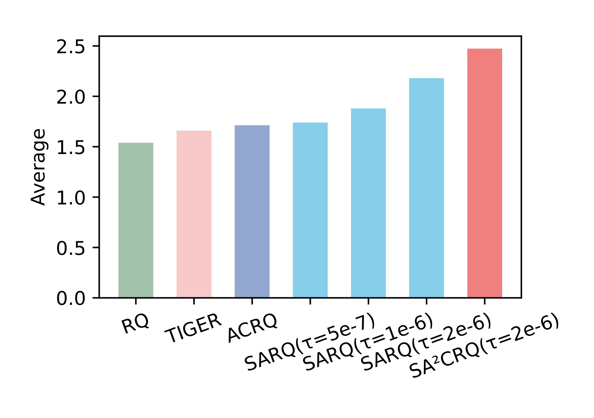
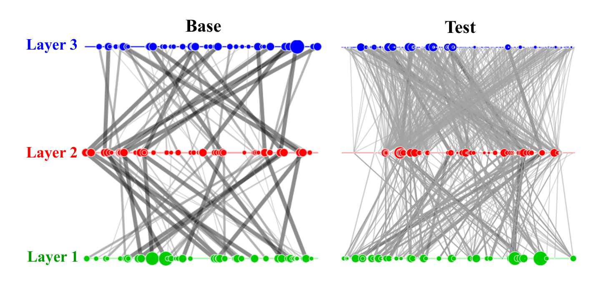
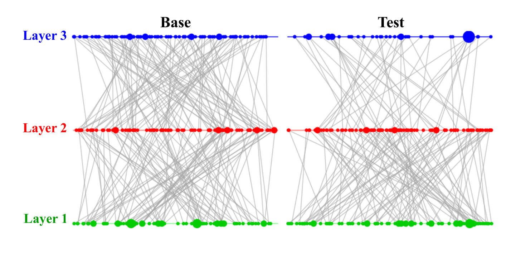
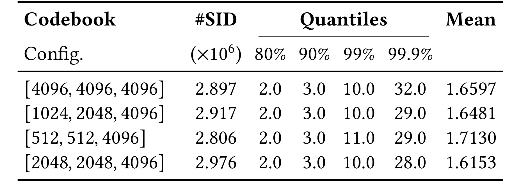

这篇 SIGIR 2026 论文《Towards Efficient and Generalizable Retrieval: Adaptive Semantic Quantization and Residual Knowledge Transfer》来自 JD.com，一作 Huimu Wang，合作机构包括哈尔滨工业大学、北京大学和中国科学院信息工程研究所；论文入口是 arXiv:2602.23978。它讨论的是工业级生成式检索里一个很具体但很棘手的问题：semantic ID 固定长度会让头部商品更容易撞码，也会让尾部商品更容易过拟合成孤立点。作者提出 $SA^2CRQ$，用 SARQ 做路径熵驱动的自适应码长，用 ACRQ 做从头部到尾部的锚定式残差知识迁移；本轮未核验到官方公开代码或项目页，因此复现判断以论文公式、图表、实验和线上 A/B 描述为准。
1. 背景和问题
生成式检索把“从候选库里找文档或商品”改写成一个序列生成问题。传统检索往往显式维护倒排索引、向量索引或多阶段召回链路，生成式检索则希望让模型直接生成目标文档或商品的离散标识符。这个离散标识符如果只是数据库原始 ID，模型很难学到语义结构；所以近几年很多工作会先把 item embedding 做离散化，得到由多个 token 组成的 semantic ID，再让 T5、Transformer 或 LLM 类模型根据 query、用户历史和上下文生成这些 token。论文把这种路线放在 search 和 recommendation 的共同语境下讨论，尤其关注工业系统，因为工业检索既要求推理效率，也要求新商品、长尾商品和头部商品都能被稳定召回。
固定长度 semantic ID 的隐含假设是：所有 item 都需要相同编码容量。这个假设在标准 benchmark 上可能看起来简单、整齐，但在电商长尾分布里很快会出问题。论文引用 JD.com 大规模电商检索系统的经验：约 1% 的 item 贡献了约 79.34% 的历史交互。这样的分布意味着头部 item 有大量行为证据，尾部和冷启动 item 则高度稀疏。若所有 item 都被迫使用同样深度的残差量化路径，头部 item 会挤在过密的语义区域里，多个高流量商品共享相近甚至相同的 code path，检索模型就会把本应区分的热门商品混在一起；尾部 item 反过来会因为交互太少而被分配到很细、很孤立的离散点，模型在训练中记住一个点，却很难把相似的新商品或少交互商品泛化到同一条可检索路径上。
这里的矛盾不是“码长越长越好”或“码长越短越好”，而是头部和尾部对 semantic ID 的需求方向不同。头部商品需要足够细的 ID 来避免碰撞，因为它们之间的点击和购买证据都很密集，错误混淆会直接损害精确召回；尾部商品需要更共享、更泛化的 ID，因为它们没有足够交互来支撑过细划分，若强行给长路径，模型更可能学习到稀疏噪声。现有 RQ-Kmeans、TIGER 一类 semantic ID 方法通常把 code depth 当成全局超参数，这就把两种互相冲突的需求压成一个折中点：调长会救头部但伤尾部，调短会救尾部但牺牲头部精度。
$SA^2CRQ$ 的问题定义因此很清楚：在生成式检索里，能否让每个 item 根据自身所处的数据密度和语义路径不确定性获得不同长度的残差 code，并且让尾部 item 不从零开始学一个脆弱的局部空间，而是被头部 item 已经学稳的语义流形锚定住。这个问题比普通“提高 Recall@K”更接近工业现实，因为线上检索系统要同时面对三类约束：第一，热门 item 的错误召回会放大成大流量误差；第二，冷启动 item 需要有被发现的机会，否则搜索和推荐会持续强化马太效应；第三，生成式检索不能只看离线分数，还要控制 hallucination，也就是模型生成了不存在的 semantic ID，最终无法映射到真实候选。
本文的贡献可以概括为两条主线。第一条是 Sequential Adaptive Residual Quantization，简称 SARQ，它把 residual quantization 的层数选择变成一个逐层决策：路径信息量还在预算内就继续量化，否则停止。第二条是 Anchored Curriculum Residual Quantization，简称 ACRQ，它先用头部 item 训练出稳定的分层 codebook，再把这些 codebook 冻结成 anchor，让尾部 item 只在 anchor 周围扩展新 codeword。两条线合在一起，论文希望达到的效果是：头部 item 得到足够细的可区分路径，尾部 item 早停在更粗的共享语义路径上，同时又不因为共享而掉入无结构的随机碰撞。
从推荐系统工程角度看，这篇论文值得记录的地方在于它把 semantic ID 的“长度”从一个静态配置项提升为一个模型化对象。过去我们可能只会问 codebook size 设多少、RQ 层数设几层、beam size 多大；这篇论文提醒我们，码长本身就是容量分配策略。容量分配如果不感知长尾结构，就会把有限 token 空间浪费在尾部孤立点上，或者把头部商品挤进少量 super-router。后续读方法和实验时，重点不是记住 $SA^2CRQ$ 这个名字，而是看它如何把“容量分配、知识迁移、路径早停、线上 hallucination”串成一条可落地链路。这个视角也能帮助我们反查本地系统：如果日志里无法还原每个 item 的路径深度、路径拥挤度和无效生成比例，就很难判断 semantic ID 的问题到底来自编码器、量化器还是生成模型。
2. 方法
2.1 从固定长度 RQ-VAE 到 SA2CRQ 的总体框架
论文的方法建立在 RQ-VAE 式 semantic ID 上。普通残差量化会把一个 item 表示 $z$ 逐层分解为多个 codeword：第一层选一个粗粒度中心，后续层不断量化前一层没有解释完的残差。若固定使用 $L$ 层，每个 item 都会得到长度为 $L$ 的 code path。这个机制天然适合表达从粗到细的语义层次，但固定深度会把头部和尾部拉进同一套容量规则。$SA^2CRQ$ 不推翻 RQ-VAE，而是在它上面加入两种控制：一是对每个 item 的 code depth $k(x)$ 做动态决策，二是把 codebook 训练拆成头部 curriculum 和尾部 anchored transfer。

Figure 1 是整篇论文最重要的方法图。左侧 ACRQ 先把 item distribution 分成 head 和 tail，并强调 Stage 1 在头部实体上做 curriculum quantization，Stage 2 再把尾部实体放到 anchored transfer learning 中；中间是 RQ-VAE 残差量化骨架，item embedding 进入 DNN encoder 得到 $r_0$，逐层经过 $Q_1(r_0)$、$Q_2(r_1)$、$Q_3(r_2)$ 得到 codebook token 和残差，再由 decoder 重构；右侧 SARQ 把每一层量化看成路径概率判断，给出 $P(c_1)$、$P(c_2\mid c_1)$ 等条件概率，并通过 mask 决定是否继续到下一层。注意图里红色 anchor centroid 和蓝色 extend centroid 的区别：红色来自头部训练并被冻结，蓝色为尾部扩展保留可训练空间。这个设计避免了尾部从零开始学一个完全不稳定的 codebook，也避免了所有 item 被塞进同一条固定长度路径。
方法图中的直觉可以拆成三步。第一步，头部 item 数据多，所以先让模型用它们构造稳定的宏观语义空间。这里不是因为头部更重要，而是因为头部交互足够密，可以作为相对可靠的语义骨架。第二步，尾部 item 进入训练时，不让它们随意改写这个骨架，而是在冻结 anchor 的基础上增加新 codeword。这样尾部 item 能借用已有语义结构，又保留表达新模式的空间。第三步，SARQ 不让所有 item 都走满层数，而是根据路径熵逐层判断。对头部 item，路径概率通常更稳定，可以继续获得更细区分；对尾部 item，路径不确定性会更快触发停止，短码反而起到正则化作用。
这里最容易误解的一点是：论文不是简单说“热门商品长 ID、冷门商品短 ID”就结束了。真正的方法结构包括训练顺序、codebook 冻结、tail extension、路径概率表和损失函数截断。只有这些机制同时存在，短 ID 才不是粗暴压缩，长 ID 才不是盲目加细节。对于工业系统，单独调一个全局 RQ 层数无法表达这种差异；单独做尾部样本增广也无法解决头部 super-router；单独给尾部短码又可能让它们被错误合并。$SA^2CRQ$ 的价值就在于把这些局部技巧约束到一个一致的 residual quantization pipeline 里。
2.2 SARQ：用路径熵决定每个 item 走多深
SARQ 的核心是把残差量化路径看成一个逐层生成过程。假设当前已经选择了前 $l-1$ 层 code，路径为 $c_1:c_{l-1}$，论文用 log-space 的链式分解度量这条路径的信息量：
符号解释：$c_i$ 是第 $i$ 层的 semantic code，$P(c_1)$ 是第一层 code 的先验概率，$P(c_i\mid c_1,\ldots,c_{i-1})$ 是在已有路径条件下选择第 $i$ 层 code 的条件概率，$I(c_1:c_{l-1})$ 是累计 self-information 或 path entropy。若某条路径很常见，概率高，负对数信息量低；若路径很罕见，概率低，累计信息量高。论文用这个量来判断当前 item 是否已经进入了过于稀疏、过于不确定的路径区域。
逐层决策规则是：在第 $l\ge 2$ 层之前，将当前路径信息量与预算 $B_l$ 比较。若
则继续量化到第 $l$ 层；否则停止，最终 code depth 为 $k(x)
头部 item 和尾部 item 在这个规则下会自然分开。头部 item 落在高密度区域，路径概率表中有更多观测支撑，累计 self-information 不容易快速爆掉，因此可以走到更深层，得到高保真的细粒度 ID。尾部 item 落在低密度区域，路径概率低，早期就可能超过预算，于是触发 early termination。这样，尾部 item 不再被强迫学习完整长路径，而是停在相对粗的共享语义 manifold 上。这里的“共享”不是缺陷，而是一种刻意正则化：在交互数据不足时，共享比孤立更有利于召回和冷启动。
SARQ 中的阈值 $\tau$ 是工程上很关键的控制旋钮。论文表格脚注说明：如果前 $N$ 层 SID 下的 item ratio 不大于 $\tau$，量化停止，否则进入下一层，并设置 $N=2$。这等价于把“一个路径下承载了多少 item”纳入停止判断。$\tau$ 越严格，越鼓励短码和共享路径；$\tau$ 越宽松，越允许模型继续细分。后面的 Table 1 可以看到，不同 $\tau$ 会改变 Hallu、Recall 和 Ret-Per 的平衡。复现时不能只拿论文最佳 $\tau=2e-6$，还要看本地 item 分布、候选库规模和冷启动比例是否接近 JD.com 的场景。
2.3 ACRQ：先学头部语义骨架，再锚定迁移到尾部
ACRQ 解决的是另一个问题：即使 SARQ 能决定码长，尾部 item 的 codebook 如果从稀疏数据中直接学习，仍然容易漂移。论文采用 curriculum 思路：先用头部 item 训练一个稳定、分层的 codebook，再把它作为尾部训练的 anchor。头部 curriculum 的一个结构约束是 codebook capacity 随层数单调增加：
符号解释：$M_l$ 是第 $l$ 层 codebook size，$L$ 是最大量化层数，$M$ 是最后一层容量。较小的 $M_1$ 迫使第一层捕获低熵、粗粒度的宏观语义，后续更大的 codebook 才逐步表达细粒度残差。这个设计和 residual quantization 的层次结构一致：越靠前的层越像“类目/主题/大簇”，越靠后的层越像“具体商品差异”。如果一开始就给第一层过大容量，头部 item 可能过早分裂，尾部迁移时也缺少稳定的公共骨架。
头部训练完成后得到一组 head codebooks $\{C_l^H\}$。尾部阶段不直接丢弃它们，而是构造每层 hybrid codebook：
符号解释：$C_l^T$ 是尾部训练时第 $l$ 层使用的混合 codebook，$C_l^H$ 是从头部训练得到并被冻结的 anchor centroids，$C_l^{new}$ 是为尾部特定模式新增且可训练的 codewords。这个公式看似简单，但工程意义很强：尾部 item 可以落到头部已经验证过的语义区域，也可以在必要时用新 codeword 表达新模式；训练过程中 anchor 不被尾部稀疏梯度破坏，tail extension 又不被完全禁止。
把 ACRQ 放到推荐系统里看，它像一种经验贝叶斯先验。头部 item 提供大量观测，所以学到的 codebook 可以被视为相对可靠的先验语义 manifold；尾部 item 的观测不足，因此不应该让它们用很少数据重塑整个空间，而应该在这个先验附近做受限更新。这样做还可以缓解 super-router 问题。固定 semantic ID 方法中，热门 item 可能被少数路径节点吸走，形成过载 router；ACRQ 用层级 codebook 和头部 curriculum 先建立更均衡的头部结构，再让尾部从这个结构中迁移，减少“所有东西都经过少数节点”的瓶颈。
2.4 统一两阶段训练目标：动态深度、截断重构和梯度 masking
论文在 Section 2.3 把 SARQ 和 ACRQ 合成一个统一训练框架。首先定义每个输入 $x$ 的动态深度：
符号解释：$x$ 是 item 输入或由 item embedding 派生的训练样本，$L$ 是最大 RQ 层数，$k(x)$ 是 SARQ 为当前样本选择的实际量化深度。这个变量进入损失函数后，训练就不再假设每个样本都走完整 $L$ 层。
Stage 1 是头部训练，输入是头部数据集 $D_H$。论文把标准 RQ-VAE 的 reconstruction、codebook、commitment 三类损失都条件化到 $k(x)$ 上：
符号解释：$\mathcal{L}_H$ 是 head-stage 总损失，$D_H$ 是头部 item 数据，$\mathcal{L}_{recon}^{(k(x))}$ 是只累积到动态深度的重构损失，$\mathcal{L}_{codebook}^{(k(x))}$ 是 codebook 更新损失，$\mathcal{L}_{commit}^{(k(x))}$ 是 commitment loss，$\beta$ 控制 commitment 强度。注意这里的上标不是装饰，而是告诉实现者：损失求和不能越过当前样本的有效深度。
重构项的截断形式可以写成：
符号解释：$z$ 是 encoder 输出的连续表示，$q_l$ 是第 $l$ 层选择的 quantized codeword，$\sum_{l=1}^{k(x)}q_l$ 是当前样本实际使用的残差 codeword 之和。若某个尾部 item 在第 2 层停止，损失就不应强迫它解释第 3 层残差；否则所谓早停只是推理时的 mask，训练时仍然会让它学习完整长路径，泛化目标会被破坏。
Stage 1 的输出包括两类关键状态：一是 ACRQ 的结构化 head codebooks $\{C_l^H\}$，二是 SARQ 的路径概率表 $\{P_l^H\}$。前者提供 anchor，后者提供后续尾部路径决策的先验。Stage 2 在尾部数据 $D_T$ 上训练，但路径终止由 head priors 决定，以防尾部稀疏数据把路径概率拉到不稳定区域。尾部 codebook loss 中的梯度 masking 是整个 ACRQ 的实现关键：
符号解释：$\mathcal{L}_{codebook,T}^{(k(x))}$ 是 tail-stage codebook loss，$\mathbf{1}(q_l\in C_l^{new})$ 是指示函数，只允许属于新扩展 codebook 的 codeword 接受梯度，$sg(\cdot)$ 表示 stop-gradient，$r_{l-1}$ 是第 $l-1$ 层后的残差。这个 masking 保证了 $C_l^H$ 作为 anchor 被严格冻结，而 $C_l^{new}$ 可以学习尾部特有模式。若复现时忘记这个 masking，尾部训练会改写头部 anchor，ACRQ 的知识迁移就退化成普通继续训练。
2.5 训练、推理和系统接口
论文在 public benchmark 和工业数据上用了不同设置。公开 MS300K 采用 T5-base，RQ-VAE 为 4 个量化层、codebook size 256，beam size 100；JD.com 工业电商数据采用 Qwen3-1.7B，训练 1 epoch，学习率 $2e-5$，考虑商品多样性更高，量化结构改为 3 层，codebook size 增至 4096，推理 beam width 128。这个差异说明 $SA^2CRQ$ 不是只在一个小模型、小 codebook 上成立；但也提醒复现者，公开数据和工业数据的 code depth、item diversity、beam 和 backbone 都不一致，不能直接把一个设置迁移到另一个环境。
训练阶段和推理阶段的接口也要分开看。训练时，系统需要统计 item path probability、head/tail 数据划分、前 $N$ 层 SID 下 item ratio、codebook split 和 $\tau$ 等变量；推理时，系统关心的是生成模型如何输出 semantic ID、beam search 如何被约束到真实候选、early termination 是否减少解码步数、生成出来的 ID 是否能映射到真实 item。论文用 Hallu 指标度量生成 semantic ID 不对应任何真实候选的比例，这对生成式检索很关键。一个模型离线 Recall 高但 Hallu 高，线上会表现成大量无效生成和候选浪费。
从工程落地角度，$SA^2CRQ$ 至少需要四类日志。第一类是 item distribution 日志，用于判断 head/tail 切分和 $\tau$ 是否稳定。第二类是 semantic path 日志，用于统计每条路径的 item count、条件概率和早停层数。第三类是 retrieval output 日志，用于比较 R@K、Ret-Per、Hallu 和真实业务指标之间的关系。第四类是 serving 日志，用于验证 early termination 是否真的降低解码成本，而不是把计算转移到更复杂的路径约束或候选映射上。论文报告单张 NVIDIA RTX 5090 上 1.7B 模型达到 30 QPS、50ms TP99 和 30.4% peak memory utilization，但本地复现仍应重新测量，因为不同候选库、beam、batching 和代码实现都会改变延迟。
2.6 和已有 semantic ID 工作的差异
和 TIGER 这类使用固定 semantic ID 的生成式推荐/检索方法相比，$SA^2CRQ$ 的差异不是 backbone 更大，而是 item ID 结构更动态。TIGER 等方法把每个 item 映射到固定长度 token 序列，生成模型学习这些 token 的自回归分布；$SA^2CRQ$ 则认为 token 序列长度要随 item path entropy 变化。这个变化会影响训练样本、解码约束、候选映射和评估方式，因此不能只在 embedding 侧替换一个 tokenizer。
和简单的 popularity-aware bucketing 相比，SARQ 没有只按照流行度排名硬切长短码，而是使用路径概率和信息预算。流行度当然影响路径统计，但路径熵还包含了“这个 item 已经落入哪条 code path、这条 path 在每层是否可靠”的信息。两个流行度相近的 item，如果语义路径密度不同，SARQ 可能给出不同深度。这个机制比按 head/body/tail 手工分桶更细，但也要求系统维护路径概率表和层级预算。
和普通 curriculum learning 相比，ACRQ 的特殊之处在于它把 curriculum 结果固化成可被尾部使用的 frozen codebook anchor，而不是只调整训练样本顺序。很多 curriculum 方法训练完后并不会在模型结构中留下明确的“头部语义锚”；ACRQ 明确保留 $C_l^H$，并用 $C_l^T=C_l^H\cup C_l^{new}$ 让尾部在这个空间里扩展。这个结构性约束是它能缓解尾部漂移的原因，也是复现时最需要仔细实现的部分。
3. 实验结果
3.1 工业搜索主结果：Recall、Hallu 和 Ret-Per 的三角关系
论文的工业数据来自 JD.com 电商搜索，包含 18M queries、5M items、约 20M 由隐式点击信号标注的训练实例，并融合最多 20 条历史点击行为序列。指标包括 MRR@K、Recall@K，并为工业长尾场景额外报告 R@500、R@1k、R@2k 和 Ret-Per。Ret-Per 是每个 query 平均检索到的 item 数，Hallu 是生成 semantic ID 无法映射到真实候选 item 的比例。这个指标组合很合理：Recall 衡量检索覆盖，Hallu 衡量生成有效性，Ret-Per 衡量候选覆盖范围，三者合起来才能判断生成式检索是否真的可用。

Table 1 是最关键的工业证据。整体看，$SA^2CRQ$ 在 $\tau=2e-6$ 时达到 R@500 0.6547、R@1k 0.7061、R@2k 0.7231、Ret-Per 914；对比最佳生成式 baseline TIGER，其 R@2k 为 0.6448、Ret-Per 509，论文在正文中给出 R@2k 相对提升 12.1%。Hallu 的解读要更谨慎：$SA^2CRQ(\tau=2e-6)$ 的 Hallu 为 0.1808，相比 TIGER 的 0.2514 明显降低，但 SARQ 单独使用 $\tau=2e-6$ 时 Hallu 更低，为 0.1556；这说明完整模型不是在单一 Hallu 指标上最优，而是在 Recall、Ret-Per、head/tail 平衡之间取得更好的整体点。表中 head/tail 分行也很重要：完整 $SA^2CRQ$ 的 head R@2k 为 0.7820，略高于 TIGER head 0.7772；tail R@2k 为 0.4555，高于 TIGER tail 0.4288，同时 tail Ret-Per 从 348 提升到 795。也就是说，它没有简单牺牲头部去换尾部，而是在尾部覆盖上拿到明显收益的同时保住头部精度。
ACRQ 和 SARQ 的单独结果帮助拆解贡献。ACRQ 单独 R@2k 为 0.6662，说明 anchor curriculum 对整体 precision 有帮助；SARQ 单独在 $\tau=2e-6$ 时 R@2k 为 0.6798、Ret-Per 661，说明自适应早停能显著改善覆盖。完整模型 R@2k 0.7231 和 Ret-Per 914 超过两者，说明 ACRQ 的稳定 manifold 和 SARQ 的动态码长存在互补关系。复现时应优先重现这张表的相对关系，而不是只追最终数值：如果 SARQ 单独不能提升 Ret-Per，说明早停策略或路径统计有问题；如果 ACRQ 单独不能稳定 head，说明 head curriculum 或 anchor 冻结可能实现错；如果完整模型没有超过两个组件，说明两阶段连接或 tail priors 没有正确接上。
3.2 公开数据泛化：有增强和无增强两种口径
公开 benchmark 使用 MS300K，来源于 MS MARCO，训练时按 NCI 的策略为每个文档生成最多 10 个 pseudo queries，并做去重以避免测试 query 泄漏到训练集。论文分别报告有数据增强的总体表现和无增强稀疏设置表现，这个拆分很有意义。因为生成式检索在公开数据上常依赖 query augmentation 来缓解监督稀疏，如果一个方法只在增强后好，很难说明它真正解决了长尾和冷启动；无增强设置更接近“数据稀疏时 semantic ID 是否能泛化”的核心问题。

Figure 2 展示有 pseudo-query augmentation 的 public dataset 结果。横轴包含 M@10、M@100、R@1、R@10 和 R@100，方法包括 BM25、DPR、DSI、NCI、RQ-Kmeans、TIGER 和 $SA^2CRQ$。从图形趋势看，BM25 和 DSI 明显低，DPR 在 Recall 高位指标上很强，RQ-Kmeans、TIGER 和 $SA^2CRQ$ 在多个指标上接近。$SA^2CRQ$ 在 M@100 约 0.504，R@100 接近 0.85，说明它在标准增强 setting 下没有因为动态码长而损害公开检索能力。这里不应过度解读为它全面压过所有 baseline，因为 Figure 2 中 DPR 在 R@10/R@100 上看起来也很强；更稳妥的读法是，$SA^2CRQ$ 在正常增强条件下保持竞争力，证明它不是只为 JD.com 私有分布特化的 tokenizer。

Figure 3 是更能体现论文主张的一张图，因为它去掉 augmentation，保留稀疏条件。图中 $SA^2CRQ$ 相对 RQ-Kmeans 和 TIGER 在 M@10、M@100、R@1、R@10、R@100 上都有标注提升，分别约 10.9%、11.2%、11.1%、10.1%、8.4%。论文正文提到 R@100 达到 0.401，而 TIGER 为 0.339。这一结果支持两个判断：第一，动态码长和 anchored transfer 不是只在头部交互丰富时有效；第二，当没有 pseudo-query 扩充监督时，短码共享和头部 anchor 对泛化更有价值。对于推荐/搜索系统实践，这张图提醒我们，评估 semantic ID 不应只看增强后的平均分，还应该专门构造 sparse 或 cold-start setting，否则很容易把数据增强带来的监督密度误判为 tokenizer 的泛化能力。
3.3 分布和消融：控制碰撞，而不是消灭所有碰撞
论文很强调“controlled collisions”这个思想。传统语义 ID 里，collision 常被视为坏事，因为两个不同 item 共享 ID 会导致模型无法区分。但在长尾场景中，完全避免碰撞也可能是坏事：如果每个尾部 item 都被分到独立路径，模型没有足够样本学习这些路径，就会导致冷启动泛化差。$SA^2CRQ$ 的目标不是让所有 item 拥有唯一 ID，而是在头部减少有害碰撞，在尾部保留有益共享。

Figure 4 展示不同方法在 item count 高分位上的分布。可以看到在 80、90、99、99.9 percentile 上，各方法的曲线差异逐步拉大。SARQ 与 $SA^2CRQ$ 在高分位处更高，意味着部分 SID 会承载更多 item。单看这点似乎像“更严重的碰撞”，但结合 Table 1 的 tail Ret-Per 和 Recall，就能理解作者的解释：尾部 item 共享较短路径，是为了把稀疏 item 聚到可泛化的语义 manifold 上。关键不是共享数量本身，而是共享是否发生在语义相近、数据稀疏、需要泛化的区域。如果共享发生在头部热门商品之间，那就是损害 precision 的 collision；如果发生在尾部相似商品之间，它可能提升零样本或少样本召回。

Figure 5 给出各方法生成的 SID 总数。RQ、TIGER、ACRQ、SARQ 和 $SA^2CRQ$ 的柱状趋势表明，$SA^2CRQ$ 并不是简单创建更多 SID 来提高覆盖，反而在总 SID 数上低于部分 SARQ 配置。这个结果和直觉容易冲突：如果头部需要更细，为什么总 SID 没有爆炸？原因在于尾部 early termination 会减少大量孤立深层路径，而头部 ACRQ 的分层 codebook 又减少 super-router 带来的无效挤压。也就是说，模型把容量从“尾部孤立细分”转移到“头部必要区分和尾部共享泛化”上。复现时应该同时看 SID 总数和 Recall，不应把 SID 多当成好，也不应把 SID 少当成压缩成功。更稳妥的做法是把 SID 总数、平均 item per SID、tail Ret-Per 和 Hallu 放进同一张诊断表。

Figure 6 展示平均每个 SID 承载的 item 数。$SA^2CRQ$ 的平均值最高，接近 2.5，说明它确实让更多 item 共用路径。这个数字要和 Figure 5 一起读：总 SID 数下降、平均 item per SID 上升，表明模型更倾向于聚合 item。若没有 ACRQ anchor，这种聚合可能变成无意义的粗糙合并；但 Table 1 和 Figure 8 说明 SARQ 把尾部 item 引向更短路径，同时保持 Recall 提升。因此这张图支持“可控共享”而不是“盲目碰撞”。在业务上，这种共享尤其适合冷启动商品、长尾商品、低频 query 下的候选扩展；但若业务强依赖热门商品精确区分，就必须检查 head 分桶指标是否仍然稳定。否则平均共享度上升可能掩盖某些高价值 query 的精确召回下降。

Figure 7 对比 head items 在 base 和 test distribution 下的三层路径结构。base 侧可以看到更粗、更集中的连线，说明部分路径节点承载了大量头部流量；test 侧路径更分散，节点大小和连线也更均衡。论文正文把这解释为 ACRQ 缓解了 baseline 的 super-router problem：热门 item 不再过度挤到少数路径中心，而是沿着层级 manifold 得到更稳定的细粒度划分。这个图和 Table 1 中 head R@2k 的保持相互呼应。若只有 tail 提升而 head 下降，说明短码共享牺牲了精确性；但 Figure 7 说明头部结构被重新组织后，头部识别性仍能保留。因此上线前应单独保存 head path 的节点负载分布，而不是只看全局 Recall。

Figure 8 对应 tail items。它和 Figure 7 的意义相反：tail item 不需要像头部那样无限分散，而是需要避免被固定长路径推到过细、过孤立的位置。图中 test 侧 tail distribution 的路径呈现更可共享的结构，和论文“terminating tail-item paths early, yielding shorter adaptive codes”的描述一致。这里的核心不是让所有尾部 item 混成一团，而是让相似尾部 item 在前几层共享语义锚点，保留被生成模型召回的机会。对于电商场景，这种机制很重要：每天新增、低频、小众商品不可能都有充分点击训练，但它们仍然应该通过类目、文本、历史相似商品和头部 anchor 获得初始召回能力。
3.4 Codebook split、在线 A/B 和效率边界
Table 2 讨论 head-tail codebook split 的敏感性。配置如 $[4096,4096,4096]$、$[1024,2048,4096]$、$[512,512,4096]$ 和 $[2048,2048,4096]$，比较总 SID 数、80/90/99/99.9 分位 item count 和均值。这个表不是主效果表，但对复现很关键，因为 ACRQ 的第一层容量直接影响宏观语义骨架的粗细，也影响尾部 anchor 的可靠性。

Table 2 中 $[512,512,4096]$ 的 mean 为 1.7130，高于其他配置，同时 99% 分位为 11.0；$[2048,2048,4096]$ 的 mean 为 1.6153，99.9% 分位为 28.0。论文正文提到，早期层更受限的容量可以进一步限制 head-item collisions。这里的工程含义是：前两层 codebook 不只是容量越大越好。第一层和第二层承担宏观语义组织，如果太大，可能让头部 item 提前碎片化；如果太小，又可能造成过度共享。合适的 split 要结合 item catalog size、head/tail 切分、beam 约束和业务目标共同选。对本地复现来说，Table 2 应该成为参数搜索矩阵，而不是直接照抄一个配置。
在线 A/B 是这篇论文比很多纯 benchmark 工作更有价值的部分。论文称 $SA^2CRQ$ 在 JD.com 搜索引擎上做了四天 strict ablation A/B test，对照组是标准生产 RQ-Kmeans SID baseline，不包含本文增强。结果是 User Conversion Rate 提升 +0.13%，User Value 提升 +0.42%。这两个提升看似数值不大，但对服务数亿用户的电商搜索系统可能有可观收益。更重要的是，它说明论文不是只在离线 Recall 上优化，而是至少通过了一轮线上业务指标验证。
效率方面，论文报告 1.7B 参数模型在单张 NVIDIA RTX 5090 上达到 30 QPS、50ms TP99 latency 和 30.4% peak memory utilization。这里需要保守解读。首先，动态 early termination 理论上会减少部分尾部 item 的解码步数，但端到端延迟还受 beam search、candidate mapping、batching、模型 serving 框架和硬件影响。其次，50ms TP99 是论文系统口径，未必可直接外推到其他业务。第三，RTX 5090 是很新的消费级/工作站级 GPU，部署环境、驱动、量化和并发策略都会影响可复现性。因此工程结论应写成：论文给出了可行性证据，但本地采用前仍需重新测 QPS、TP99、显存、Hallu 和失败样本。
整体实验链条比较完整：Table 1 证明工业主结果和 head/tail 拆分，Figure 2/3 证明公开数据和稀疏条件泛化，Figures 4-8 解释 SID 分布和 head/tail 路径结构，Table 2 说明 codebook split 敏感性，线上 A/B 和效率指标说明有生产部署证据。它的不足也很明显：论文只有 6 页，很多实现细节没有展开，例如 head/tail 划分阈值、路径概率表平滑、候选映射失败处理、A/B 流量分桶和业务指标置信区间都未充分披露。读者应把它视为一个可信度较高的工业论文线索，而不是完整可复现的开源 recipe。
4. 总结
4.1 我的判断
$SA^2CRQ$ 的核心价值是把 semantic ID 的长度和知识迁移机制同时纳入长尾建模。它没有把生成式检索的问题简化成“换一个更大的模型”或“做更多数据增强”，而是回到 item identifier 的结构设计：头部需要细分以避免有害 collision，尾部需要共享以获得泛化，二者必须通过动态码长和 anchor manifold 同时处理。对推荐系统和电商搜索来说，这个方向值得跟进，因为 semantic ID 已经成为生成式推荐、统一召回排序和大模型检索链路中的基础组件，一旦 ID 结构错了，后续模型再大也会继承这个偏差。
我不会把这篇论文解读为“尾部一定短码、头部一定长码”的简单规则。更准确的结论是：码长应由路径不确定性和系统容量预算共同决定；尾部短码必须依赖可靠 anchor，否则只是粗糙合并；头部长码必须配合 head curriculum，否则可能只是更复杂的 super-router。本文的 SARQ 和 ACRQ 正好分别解决这两部分。如果后续有官方代码或更多工业细节，最应该检查的不是模型 backbone，而是路径概率统计、$\tau$ 早停、codebook split、gradient masking 和候选 ID 映射这些实现点。
4.2 工程启发与复现建议
第一，若本地已有 semantic ID 或 RQ-VAE tokenizer，应先做 head/body/tail 分桶审计。具体看每个 SID 下的 item count 分布、热门 item 是否集中到少数路径、尾部 item 是否大量一对一路径、生成结果中 Hallu 占比是否随尾部 query 上升。没有这组审计，直接复现 $SA^2CRQ$ 很容易只是在已有 tokenizer 上叠复杂度。
第二，复现 SARQ 时先从离线路径统计开始。需要固定一版 item embedding 和 RQ codebook，统计每层 code path 概率、前 $N$ 层 item ratio 和不同 $\tau$ 下的早停分布，再比较 tail Recall、Ret-Per 和 Hallu。若 $\tau$ 变化不影响 tail 行为，说明路径统计或早停逻辑没有触达真实长尾。
第三，复现 ACRQ 时必须严格区分 frozen anchor 和 trainable extension。实现上要检查 $C_l^H$ 是否真的不更新，$C_l^{new}$ 是否能接收尾部梯度，head-stage 输出的 $P_l^H$ 是否被 tail-stage 使用。最好做四个对照：固定长度 RQ、只 SARQ、只 ACRQ、完整 $SA^2CRQ$。如果完整模型没有超过组件单独版本，不要急着调业务参数，先查训练阶段连接。
第四，线上前要增加三类保护：Hallu 保护，防止生成不存在的 semantic ID；head 精度保护，防止热门商品召回退化；tail 覆盖保护，验证 Ret-Per 和 tail Recall 的提升是否真的带来可消费候选，而不是增加低质候选。论文报告 +0.13% UCVR 和 +0.42% User Value，但本地业务可能更看 GMV、CTR、CVR、搜索满意度或用户停留，指标映射需要重新定义。
4.3 局限与后续跟进
这篇论文的局限主要有四点。第一，论文篇幅短，很多工业细节没有公开，尤其是线上 A/B 的置信区间、流量规模、query 分桶和失败样本。第二，公开数据 MS300K 与电商工业数据差异较大，public benchmark 的正向结果只能说明泛化趋势，不能替代电商环境验证。第三，$SA^2CRQ$ 引入了更多状态变量，包括 path probability、head priors、frozen anchors、tail extensions 和 $\tau$，系统复杂度明显高于固定 RQ。第四，论文未提供官方代码，本轮也未核验到公开项目页，复现成本和实现偏差风险都较高。
后续跟进建议有三项。第一，关注作者或 JD.com 是否释放代码、技术博客或更长版本，尤其是 head/tail 切分和线上 serving 细节。第二，把这篇论文与 TIGER、LETTER、OneRec、EAGER、VarLenRec、CAPSID 等 semantic ID 方向放在一起比较，整理“固定长度、变长长度、soft routing、parallel generation、协同语义融合”几条路线的优劣。第三，如果本地要做实验，先做 tokenizer 审计和离线小样本复现，不要直接进入主链路；只有当 head/tail 分桶、Hallu、Ret-Per、延迟和业务指标都形成闭环后，才考虑影子流量或小流量 A/B。
总的来说，$SA^2CRQ$ 是一篇很适合推荐/搜索工程团队精读的工业生成式检索论文。它的贡献不在于发明一个孤立模块，而在于把长尾分布、semantic ID 容量、残差量化路径、头部知识迁移和线上效率放到同一套框架里。即使最终不采用它的完整训练流程，路径熵审计、head/tail codebook split、Hallu 与 Ret-Per 联合评估这些思想也值得沉淀到本地生成式检索系统的诊断工具中。